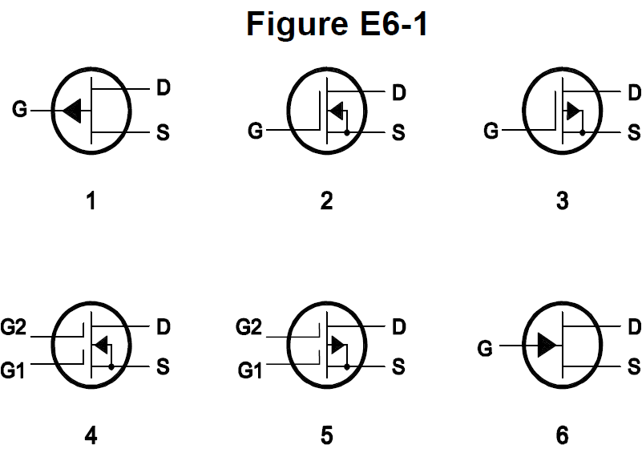
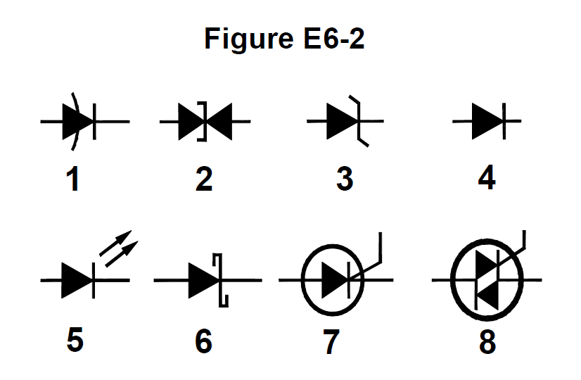
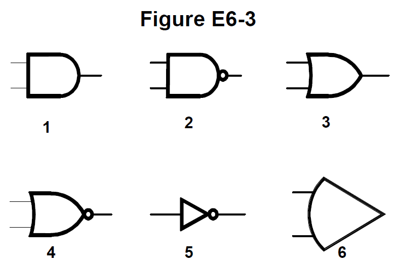

All 68 Ham Radio Amateur Extra questions for E6 Circuit Components with the correct answers marked, from the official 2024-2028 question pool. Test yourself with the free practice exam.
E6A01
In what application is gallium arsenide used as a semiconductor material?
A. In high-current rectifier circuits
B. In high-power audio circuits
C. In microwave circuits ✓
D. In very low-frequency RF circuits
E6A02
Which of the following semiconductor materials contains excess free electrons?
A. N-type ✓
B. P-type
C. Bipolar
D. Insulated gate
E6A03
Why does a PN-junction diode not conduct current when reverse biased?
A. Only P-type semiconductor material can conduct current
B. Only N-type semiconductor material can conduct current
C. Holes in P-type material and electrons in the N-type material are separated by the applied voltage, widening the depletion region ✓
D. Excess holes in P-type material combine with the electrons in N-type material, converting the entire diode into an insulator
E6A04
What is the name given to an impurity atom that adds holes to a semiconductor crystal structure?
A. Insulator impurity
B. N-type impurity
C. Acceptor impurity ✓
D. Donor impurity
E6A05
How does DC input impedance at the gate of a field-effect transistor (FET) compare with that of a bipolar transistor?
A. They are both low impedance
B. An FET has lower input impedance
C. An FET has higher input impedance ✓
D. They are both high impedance
E6A06
What is the beta of a bipolar junction transistor?
A. The frequency at which the current gain is reduced to 0.707
B. The change in collector current with respect to the change in base current ✓
C. The breakdown voltage of the base-to-collector junction
D. The switching speed
E6A07
Which of the following indicates that a silicon NPN junction transistor is biased on?
A. Base-to-emitter resistance of approximately 6 ohms to 7 ohms
B. Base-to-emitter resistance of approximately 0.6 ohms to 0.7 ohms
C. Base-to-emitter voltage of approximately 6 volts to 7 volts
D. Base-to-emitter voltage of approximately 0.6 volts to 0.7 volts ✓
E6A08
What is the term for the frequency at which the grounded-base current gain of a bipolar junction transistor has decreased to 0.7 of the gain obtainable at 1 kHz?
A. Corner frequency
B. Alpha rejection frequency
C. Beta cutoff frequency
D. Alpha cutoff frequency ✓
E6A09
What is a depletion-mode field-effect transistor (FET)?
A. An FET that exhibits a current flow between source and drain when no gate voltage is applied ✓
B. An FET that has no current flow between source and drain when no gate voltage is applied
C. An FET that exhibits very high electron mobility due to a lack of holes in the N-type material
D. An FET for which holes are the majority carriers
E6A10
In Figure E6-1, which is the schematic symbol for an N-channel dual-gate MOSFET?

A. 2
B. 4 ✓
C. 5
D. 6
E6A11
In Figure E6-1, which is the schematic symbol for a P-channel junction FET?
A. 1 ✓
B. 2
C. 3
D. 6
E6A12
What is the purpose of connecting Zener diodes between a MOSFET gate and its source or drain?
A. To provide a voltage reference for the correct amount of reverse-bias gate voltage
B. To protect the substrate from excessive voltages
C. To keep the gate voltage within specifications and prevent the device from overheating
D. To protect the gate from static damage ✓
E6B01
What is the most useful characteristic of a Zener diode?
A. A constant current drop under conditions of varying voltage
B. A constant voltage drop under conditions of varying current ✓
C. A negative resistance region
D. An internal capacitance that varies with the applied voltage
E6B02
Which characteristic of a Schottky diode makes it a better choice than a silicon junction diode for use as a power supply rectifier?
A. Much higher reverse voltage breakdown
B. More constant reverse avalanche voltage
C. Longer carrier retention time
D. Lower forward voltage drop ✓
E6B03
What property of an LED's semiconductor material determines its forward voltage drop?
A. Intrinsic resistance
B. Band gap ✓
C. Junction capacitance
D. Junction depth
E6B04
What type of semiconductor device is designed for use as a voltage-controlled capacitor?
A. Varactor diode ✓
B. Tunnel diode
C. Silicon-controlled rectifier
D. Zener diode
E6B05
What characteristic of a PIN diode makes it useful as an RF switch?
A. Extremely high reverse breakdown voltage
B. Ability to dissipate large amounts of power
C. Reverse bias controls its forward voltage drop
D. Low junction capacitance ✓
E6B06
Which of the following is a common use of a Schottky diode?
A. In oscillator circuits as the negative resistance element
B. As a variable capacitance in an automatic frequency control circuit
C. In power supplies as a constant voltage reference
D. As a VHF/UHF mixer or detector ✓
E6B07
What causes a junction diode to fail from excessive current?
A. Excessive inverse voltage
B. Excessive junction temperature ✓
C. Insufficient forward voltage
D. Charge carrier depletion
E6B08
Which of the following is a Schottky barrier diode?
A. Metal-semiconductor junction ✓
B. Electrolytic rectifier
C. PIN junction
D. Thermionic emission diode
E6B09
What is a common use for point-contact diodes?
A. As a constant current source
B. As a constant voltage source
C. As an RF detector ✓
D. As a high-voltage rectifier
E6B10
In Figure E6-2, which is the schematic symbol for a Schottky diode?

A. 1
B. 6 ✓
C. 2
D. 3
E6B11
What is used to control the attenuation of RF signals by a PIN diode?
A. Forward DC bias current ✓
B. A variable RF reference voltage
C. Reverse voltage larger than the RF signal
D. Capacitance of an RF coupling capacitor
E6C01
What is the function of hysteresis in a comparator?
A. To prevent input noise from causing unstable output signals ✓
B. To allow the comparator to be used with AC input signals
C. To cause the output to continually change states
D. To increase the sensitivity
E6C02
What happens when the level of a comparator’s input signal crosses the threshold voltage?
A. The IC input can be damaged
B. The comparator changes its output state ✓
C. The reference level appears at the output
D. The feedback loop becomes unstable
E6C03
What is tri-state logic?
A. Logic devices with 0, 1, and high-impedance output states ✓
B. Logic devices that utilize ternary math
C. Logic with three output impedances which can be selected to better match the load impedance
D. A counter with eight states
E6C04
Which of the following is an advantage of BiCMOS logic?
A. Its simplicity results in much less expensive devices than standard CMOS
B. It is immune to electrostatic damage
C. It has the high input impedance of CMOS and the low output impedance of bipolar transistors ✓
D. All these choices are correct
E6C05
Which of the following digital logic families has the lowest power consumption?
A. Schottky TTL
B. ECL
C. NMOS
D. CMOS ✓
E6C06
Why do CMOS digital integrated circuits have high immunity to noise on the input signal or power supply?
A. Large bypass capacitance is inherent
B. The input switching threshold is about twice the power supply voltage
C. The input switching threshold is about half the power supply voltage ✓
D. Bandwidth is very limited
E6C07
What best describes a pull-up or pull-down resistor?
A. A resistor in a keying circuit used to reduce key clicks
B. A resistor connected to the positive or negative supply used to establish a voltage when an input or output is an open circuit ✓
C. A resistor that ensures that an oscillator frequency does not drift
D. A resistor connected to an op-amp output that prevents signals from exceeding the power supply voltage
E6C08
In Figure E6-3, which is the schematic symbol for a NAND gate?

A. 1
B. 2 ✓
C. 3
D. 4
E6C09
What is used to design the configuration of a field-programmable gate array (FPGA)?
A. Karnaugh maps
B. Hardware description language (HDL) ✓
C. An auto-router
D. Machine and assembly language
E6C10
In Figure E6-3, which is the schematic symbol for a NOR gate?
A. 1
B. 2
C. 3
D. 4 ✓
E6C11
In Figure E6-3, which is the schematic symbol for the NOT operation (inversion)?
A. 2
B. 4
C. 5 ✓
D. 6
E6D01
What is piezoelectricity?
A. The ability of materials to generate electromagnetic waves of a certain frequency when voltage is applied
B. A characteristic of materials that have an index of refraction which depends on the polarization of the electromagnetic wave passing through it
C. A characteristic of materials that generate a voltage when stressed and that flex when a voltage is applied ✓
D. The ability of materials to generate voltage when an electromagnetic wave of a certain frequency is applied
E6D02
What is the equivalent circuit of a quartz crystal?
A. Series RLC in parallel with a shunt C representing electrode and stray capacitance ✓
B. Parallel RLC, where C is the parallel combination of resonance capacitance of the crystal and electrode and stray capacitance
C. Series RLC, where C is the parallel combination of resonance capacitance of the crystal and electrode and stray capacitance
D. Parallel RLC, where C is the series combination of resonance capacitance of the crystal and electrode and stray capacitance
E6D03
Which of the following is an aspect of the piezoelectric effect?
A. Mechanical deformation of material due to the application of a voltage ✓
B. Mechanical deformation of material due to the application of a magnetic field
C. Generation of electrical energy in the presence of light
D. Increased conductivity in the presence of light
E6D04
Why are cores of inductors and transformers sometimes constructed of thin layers?
A. To simplify assembly during manufacturing
B. To reduce power loss from eddy currents in the core ✓
C. To increase the cutoff frequency by reducing capacitance
D. To save cost by reducing the amount of magnetic material
E6D05
How do ferrite and powdered iron compare for use in an inductor core?
A. Ferrite cores generally have lower initial permeability
B. Ferrite cores generally have better temperature stability
C. Ferrite cores generally require fewer turns to produce a given inductance value ✓
D. Ferrite cores are easier to use with surface-mount technology
E6D06
What core material property determines the inductance of an inductor?
A. Permittivity
B. Resistance
C. Reactivity
D. Permeability ✓
E6D08
Which of the following materials has the highest temperature stability of its magnetic characteristics?
A. Brass
B. Powdered iron ✓
C. Ferrite
D. Aluminum
E6D09
What devices are commonly used as VHF and UHF parasitic suppressors at the input and output terminals of a transistor HF amplifier?
A. Electrolytic capacitors
B. Butterworth filters
C. Ferrite beads ✓
D. Steel-core toroids
E6D10
What is a primary advantage of using a toroidal core instead of a solenoidal core in an inductor?
A. Toroidal cores confine most of the magnetic field within the core material ✓
B. Toroidal cores make it easier to couple the magnetic energy into other components
C. Toroidal cores exhibit greater hysteresis
D. Toroidal cores have lower Q characteristics
E6D11
Which type of core material decreases inductance when inserted into a coil?
A. Ceramic
B. Brass ✓
C. Ferrite
D. Aluminum
E6D12
What causes inductor saturation?
A. Operation at too high a frequency
B. Selecting a core with low permeability
C. Operation at excessive magnetic flux ✓
D. Selecting a core with excessive permittivity
E6E01
Why is gallium arsenide (GaAs) useful for semiconductor devices operating at UHF and higher frequencies?
A. Higher noise figures
B. Higher electron mobility ✓
C. Lower junction voltage drop
D. Lower transconductance
E6E02
Which of the following device packages is a through-hole type?
A. DIP ✓
B. PLCC
C. BGA
D. SOT
E6E03
Which of the following materials supports the highest frequency of operation when used in MMICs?
A. Silicon
B. Silicon nitride
C. Silicon dioxide
D. Gallium nitride ✓
E6E04
Which is the most common input and output impedance of MMICs?
A. 50 ohms ✓
B. 300 ohms
C. 450 ohms
D. 75 ohms
E6E05
Which of the following noise figure values is typical of a low-noise UHF preamplifier?
A. 0.5 dB ✓
B. -10 dB
C. 44 dBm
D. -20 dBm
E6E06
What characteristics of MMICs make them a popular choice for VHF through microwave circuits?
A. The ability to retrieve information from a single signal, even in the presence of other strong signals
B. Extremely high Q factor and high stability over a wide temperature range
C. Nearly infinite gain, very high input impedance, and very low output impedance
D. Controlled gain, low noise figure, and constant input and output impedance over the specified frequency range ✓
E6E07
What type of transmission line is often used for connections to MMICs?
A. Miniature coax
B. Circular waveguide
C. Parallel wire
D. Microstrip ✓
E6E08
How is power supplied to the most common type of MMIC?
A. Through a capacitor and RF choke connected to the amplifier input lead
B. MMICs require no operating bias
C. Through a resistor and/or RF choke connected to the amplifier output lead ✓
D. Directly to the bias voltage (Vcc) lead
E6E09
Which of the following component package types have the least parasitic effects at frequencies above the HF range?
A. TO-220
B. Axial lead
C. Radial lead
D. Surface mount ✓
E6E10
What advantage does surface-mount technology offer at RF compared to using through-hole components?
A. Smaller circuit area
B. Shorter circuit board traces
C. Components have less parasitic inductance and capacitance
D. All these choices are correct ✓
E6E11
What is a characteristic of DIP packaging used for integrated circuits?
A. Extremely low stray capacitance (dielectrically isolated package)
B. Extremely high resistance between pins (doubly insulated package)
C. Two chips in each package (dual in package)
D. Two rows of connecting pins on opposite sides of package (dual in-line package) ✓
E6E12
Why are DIP through-hole package ICs not typically used at UHF and higher frequencies?
A. Excessive dielectric loss
B. Epoxy coating is conductive above 300 MHz
C. Excessive lead length ✓
D. Unsuitable for combining analog and digital signals
E6F01
What absorbs the energy from light falling on a photovoltaic cell?
A. Protons
B. Photons
C. Electrons ✓
D. Holes
E6F02
What happens to photoconductive material when light shines on it?
A. Resistance decreases ✓
B. Resistance increases
C. Reflectivity increases
D. Reflectivity decreases
E6F03
What is the most common configuration of an optoisolator or optocoupler?
A. A lens and a photomultiplier
B. A frequency-modulated helium-neon laser
C. An amplitude-modulated helium-neon laser
D. An LED and a phototransistor ✓
E6F04
What is the photovoltaic effect?
A. The conversion of voltage to current when exposed to light
B. The conversion of light to electrical energy ✓
C. The effect that causes a photodiode to emit light when a voltage is applied
D. The effect that causes a phototransistor’s beta to decrease when exposed to light
E6F05
Which of the following describes an optical shaft encoder?
A. A device that detects rotation by interrupting a light source with a patterned wheel ✓
B. A device that measures the strength of a beam of light using analog-to-digital conversion
C. An optical computing device in which light is coupled between devices by fiber optics
D. A device for generating RTTY signals by means of a rotating light source
E6F06
Which of these materials is most commonly used to create photoconductive devices?
A. Polyphenol acetate
B. Argon
C. Crystalline semiconductor ✓
D. All these choices are correct
E6F07
What is a solid-state relay?
A. A relay that uses transistors to drive the relay coil
B. A device that uses semiconductors to implement the functions of an electromechanical relay ✓
C. A mechanical relay that latches in the on or off state each time it is pulsed
D. A semiconductor switch that uses a monostable multivibrator circuit
E6F08
Why are optoisolators often used in conjunction with solid-state circuits that control 120 VAC circuits?
A. Optoisolators provide a low-impedance link between a control circuit and a power circuit
B. Optoisolators provide impedance matching between the control circuit and power circuit
C. Optoisolators provide an electrical isolation between a control circuit and the circuit being switched ✓
D. Optoisolators eliminate the effects of reflected light in the control circuit
E6F09
What is the efficiency of a photovoltaic cell?
A. The output RF power divided by the input DC power
B. The output in lumens divided by the input power in watts
C. The open-circuit voltage divided by the short-circuit current under full illumination
D. The relative fraction of light that is converted to current ✓
E6F10
What is the most common material used in power-generating photovoltaic cells?
A. Selenium
B. Silicon ✓
C. Cadmium sulfide
D. Indium arsenide
E6F11
What is the approximate open-circuit voltage produced by a fully illuminated silicon photovoltaic cell?
A. 0.5 volts ✓
B. 0.7 volts
C. 1.1 volts
D. 1.5 volts